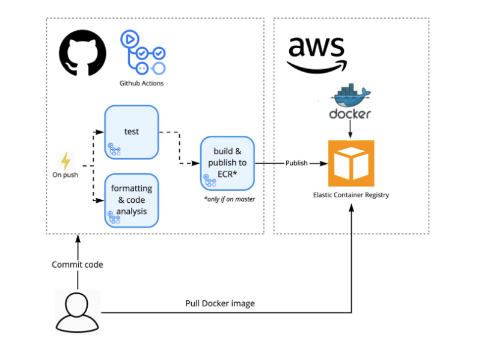
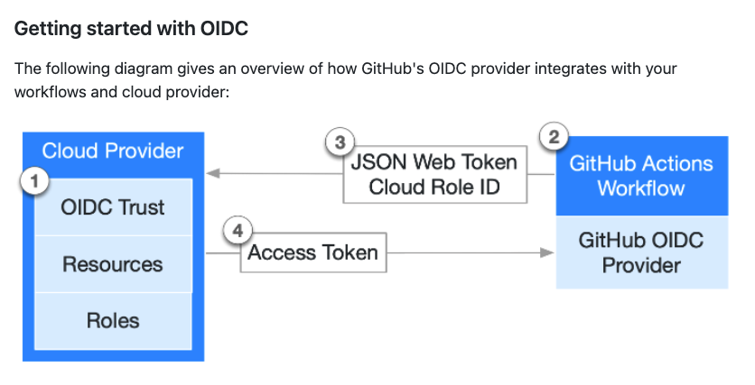
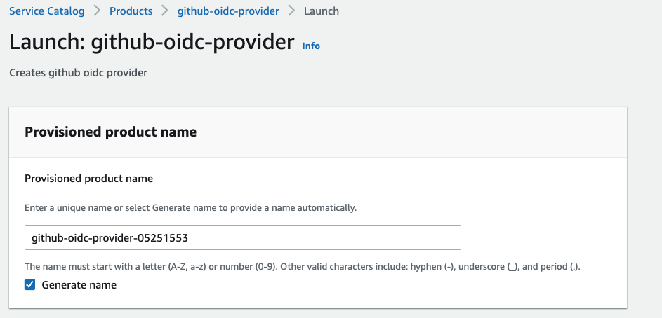
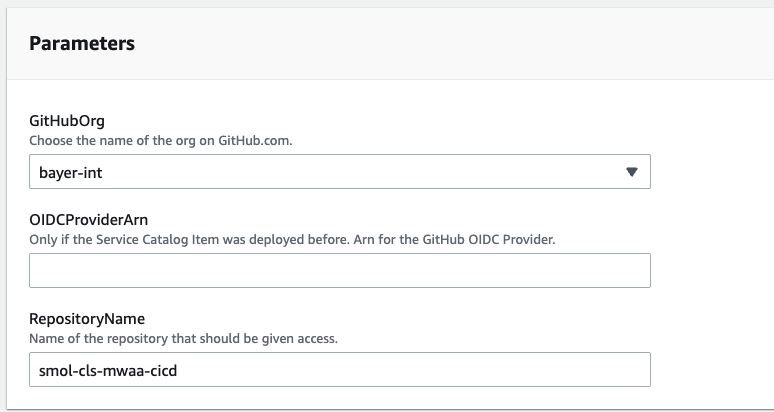

CICD Pipeline for Docker Images

This is a new repository using DevOps best practices and Python. A project scaffold is setup to use cloud microservices in a CICD workflow. This scaffold can be modified to fit a typical data science project. Access this code at (bayer-int/smol-cls-ecr)[https://github.com/bayer-int/smol-cls-ecr]
Summary
Build production docker images using CICD pipeline (GH Actions), lint docker/python and push to AWS ECR. Authentication using OIDC is preferred, because there are no keys/secrets to manage. GH Actions is used to build a docker image and directly pushed to ECR from GH Actions.
MLOps Best Practices
My web application is a microservice
flowchart LR
CICD(CICD) --> Container(Container)
Microservice(Microservice)
Container --> Microservice
fxn(Function) <--> Web(Web)
Microservice --> fxn
Scaffold
My preferred process for every new project.
This GitHub repo has all the ingredients for a building a container based API deployed to AWS: Makefile, requirements.txt, virtual environment, directory structure, application files, application test files and Dockerfile.
flowchart LR
GH(GitHub Checkout) --> code(Codebase <br> _______ <br> - App Scripts <br> - App Directories <br> - Test App Logic <br> - Virtual Environment <br> - Library Requirements <br> - Container)
The Makefile and GH Actions .yml orchestrate all the logic. This minimizes debugging and collaboration/ramping-up. The GH Actions runner implements directly from the Makefile. In addition the Makefile can be used for early development in local environment. Production code should run exactly like local code but in practice something usually breaks and minor manual changes are required; typically there is a bias towards production.
Project Makefile:
install:
# Install Py lib
pip install --upgrade pip &&\
pip install -r requirements.txt
#cat requirements.txt | xargs poetry add
post-install:
python -m textblob.download_corpora
git:
# Update Git Repo
bash sync_git.sh
format:
# format code using black
black *.py mylib/*.py
lint:
# format code using pylint or flake8
pylint --disable=R,C *.py mylib/*.py
test:
# test code
python -m pytest -vv --cov=mylib --cov=main test_*.py
build:
#build container
docker build -t deploy-fastapi .
run:
#run docker
docker run -p 127.0.0.1:8080:8080 deploy-fastapi
deploy:
aws ecr get-login-password --region us-east-1 | docker login --username AWS --password-stdin 722540083300.dkr.ecr.us-east-1.amazonaws.com
docker build -t smol-cls-ecr . ## This is the ECR name
docker tag smol-cls-ecr:latest 722540083300.dkr.ecr.us-east-1.amazonaws.com/smol-cls-ecr:latest
docker push 722540083300.dkr.ecr.us-east-1.amazonaws.com/smol-cls-ecr:latest
all: install post-install lint test deploy
Development
Write code in local environment, use GH Actions to test and then deploy to AWS.
Workflow
OIDC authenticate
Allow GH Actions to authenticate to AWS using OIDC.
Build docker image using GH Actions and push to ECR.

- In your cloud provider, create an OIDC trust between your cloud role and your GitHub workflow(s) that need access to the cloud.
- Every time your job runs, GitHub's OIDC Provider auto-generates an OIDC token. This token contains multiple claims to establish a security-hardened and verifiable identity about the specific workflow that is trying to authenticate.
- You could include a step or action in your job to request this token from GitHub's OIDC provider, and present it to the cloud provider.
- Once the cloud provider successfully validates the claims presented in the token, it then provides a short-lived cloud access token that is available only for the duration of the job.
:closed_book: For more information see the github docs for security hardening production deployments link: https://docs.github.com/en/actions/deployment/security-hardening-your-deployments/about-security-hardening-with-openid-connect
AWS Create Service catalog product
- [ ] TODO Launch this CF stack using CLI. This project is currently provisioned using the AWS console for CF and IAM.
Start Work: Navigate to AWS Console.
From the AWS console >> Service Catalog >> Products the github-oidc-provider will show up like this:

Next, build CloudFormation stack for cloud engineering product: github oidc provider.

In CloudFormation parameters set bayer-int and repo name smol-cls-cicd
:pencil: Update repo name for each new project.
Next set CF parameters.

| parameter | content | required |
|---|---|---|
| GitHub org | bayer-int | true |
| OIDCProviderArn | When catalog item was already used once. Use arn of generated OIDC Provider. | false |
| Repository Name | Technical name of the repository, as seen in the url. e.g smol-cls-cicd | true |
AWS IAM setup
Trusted entitites policy is attached during CloudFormation build.
It should look like this:
{
"Version": "2008-10-17",
"Statement": [
{
"Effect": "Allow",
"Principal": {
"Federated": "arn:aws:iam::722540083300:oidc-provider/token.actions.githubusercontent.com",
"AWS": "arn:aws:iam::722540083300:role/cloudops"
},
"Action": "sts:AssumeRoleWithWebIdentity",
"Condition": {
"StringLike": {
"token.actions.githubusercontent.com:sub": "repo:bayer-int/smol-cls-mwaa-cicd:*"
}
}
},
{
"Effect": "Allow",
"Principal": {
"AWS": "arn:aws:iam::722540083300:role/cloudops"
},
"Action": "sts:AssumeRole"
}
]
}
Attach ECR policy to OIDC role
Attach existing policies directly. In "find policies" search for AmazonEC2ContainerRegistryFullAccess and check it which will give this User Account permission to push on Private ECR.
GitHub Actions
Add file for GH Actions and document workflow events. A simple project has the following directories:
├── .github
│ └── workflows
│ └── deploy_ecr.yml ## GitHub Actions
├── .gitignore
├── Dockerfile ## Dockerfile in project root
├── Makefile ## Makefile instructs my GH Actions
├── README.md
├── img
├── main.py
├── mylib ## python logic
├── requirements.txt ## virtual environment
├── sync_git.sh ## optional sync git
└── test_main.py
Include GitHub actions permissions
## This allows your GitHub Actions job to save the temporary
## credentials it gets when authenticating with the Cloud Provider.
permissions:
contents: 'read'
id-token: 'write'
Use the aws-actions/configure-aws-credentials action.
- name: Configure AWS Credentials
uses: aws-actions/configure-aws-credentials@v1
with:
role-to-assume: arn:aws:iam::123456789100:role/github-actions-role
aws-region: eu-east-1
Test GH Actions server runs as expected
Push code to git
Verify docker image is in ECR
Reference
This project builds from the OIDC auth method documented in Bayer go docs. To review the details go to Authenticate to Cloud - Bayer go docs